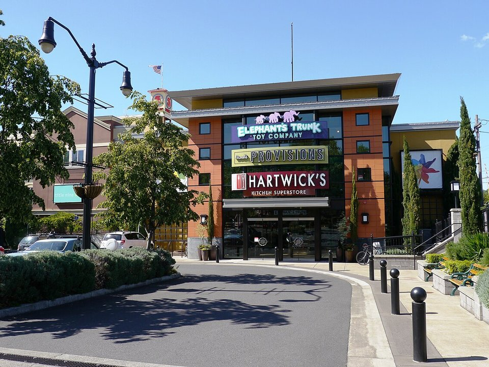

Downtown · Luxury boutique hotel
Inn at the 5th
A luxury boutique hotel beside the 5th Street Public Market, with a day spa and Marché steps away.
Official details for Inn at the 5thTrackTown, farmers’ markets and Pinot Noir.
Eugene is a green, easygoing college town on the Willamette River, home of the University of Oregon and Hayward Field, the rebuilt stadium that hosted the 2022 World Athletics Championships. Land at Eugene’s Mahlon Sweet Field, stay at the Victorian Campbell House on Skinner Butte or on the river at Valley River Inn, browse the Saturday Market and the 5th Street Public Market, taste Pinot Noir at King Estate in the hills south of town, and save a day for the McKenzie River or the coast.

Time illustration: direct distance at 150 KTAS plus 15 minutes for departure and arrival, matching the discovery page. Use ForeFlight for your actual flight plan.
Check the weekend weather at both ends → Flight category, your minimums and the crosswind on the best runway.
More in Aviation & getting around below. Crew cars change often: call the FBO before you go. How to have a rental car waiting at the FBO · Know something we missed? Tell us.
KEUG, Eugene/Mahlon Sweet Field, is a towered Class C airport at 374 feet with runways of 8,009 and 6,000 feet, about 15 minutes northwest of downtown.
Eugene Airport, Eugene, OR
Class C with airline traffic; brief the procedures. Waterfowl and birds are common on and near the airport. No live fuel price is shown.
Pacific Northwest weather: low ceilings, drizzle and mountain obscuration much of the year from October to May; clear, dry summers with morning marine stratus on the coast; icing in winter clouds; and the Cascades between the coast and the interior. About 2130 nm from Myrtle Beach: two long days each way with several fuel stops. Plan a week, or overnight on the way out and back.
Rates and availability need travel dates. Book early for football and track weekends and graduation.
A luxury boutique hotel beside the 5th Street Public Market, with a day spa and Marché steps away.
Official details for Inn at the 5thAn 1892 Victorian inn on the hill above downtown, with fine dining.
Official details for The Campbell HouseA riverside hotel on the bike path along the Willamette.
Official details for Valley River InnHotels and inns in Eugene.
Eugene, Cascades & Coast for More places to stayPrices and availability for your dates, through our partner Stay22. This is an affiliate link: we may earn a commission at no cost to you. The picks above are never paid.
Reserve weekend dinners.
Seasonal Northwest cooking at the 5th Street Public Market.
Official details for MarchéA longtime local favorite for handmade pasta.
Official details for Beppe & Gianni’s TrattoriaLunch and Pinot Noir on a hilltop estate about 30 minutes southwest.
Official details for King Estate WineryOne of Eugene’s best-known breweries, in the Whiteaker neighborhood.
Official details for Ninkasi BrewingCakes, pastries and coffee.
Official details for Sweet Life PatisserieSummer is dry and sunny; the rest of the year, pack a rain shell.
Waterfalls, hot springs and trails in the Willamette National Forest, about an hour east.
U.S. Forest ServiceKing Estate, Sweet Cheeks and Iris Vineyards.
Eugene, Cascades & CoastThis prototype links to the local visitor site. It does not yet match events to your travel dates.
Classical music around the university.
Oregon Bach Festival for Oregon Bach FestivalA three-day arts and music fair in the woods near Veneta.
Oregon Country Fair for Oregon Country FairEvery Saturday downtown.
Saturday Market for Saturday MarketCheck the local calendar when choosing a weekend, and confirm dates and tickets with the organizer.
A sample Eugene weekend. This is a two-day flight each way; plan a week. No bookings or availability confirmed.
Land at KEUG mid-morning.
Lunch at the 5th Street Public Market.
A walk up Skinner Butte, then back to the airport.
Land at KEUG, subject to weather and your actual flight plan.
Check in and walk the 5th Street Public Market.
Dinner at Marché.
The Saturday Market, then a walk up Skinner Butte.
Lunch and tasting at King Estate.
Dinner at Beppe & Gianni’s.
Coffee and pastries at Sweet Life.
Return the car and allow time at the airport.
Pacific Northwest ceilings can drop quickly; leave with a margin.
The Saturday Market.
King Estate Winery.
Dinner at Marché.
This guide is part of a multi-stop flying trip. Set your dates and aircraft, then swap stops to make it your own.
These details make the difference between an appealing list and a usable getaway.
Lodging first on game and track weekends.
About 2,130 nm from Myrtle Beach: two long days each way.
Dry summers; low ceilings and rain much of the rest of the year.
June to September.
Picks and links reviewed by WingAway Weekends. Hours, prices, menus and availability change often, so confirm directly with each place before booking. Spotted something out of date, or have a favorite we missed? Email us at hello@wingawayweekends.com.
WingAway Weekends helps you discover the destination. Use ForeFlight and current official aviation information for route, performance, weather, NOTAMs and preflight decisions. Flight planning and PIC responsibility stay with the pilot.